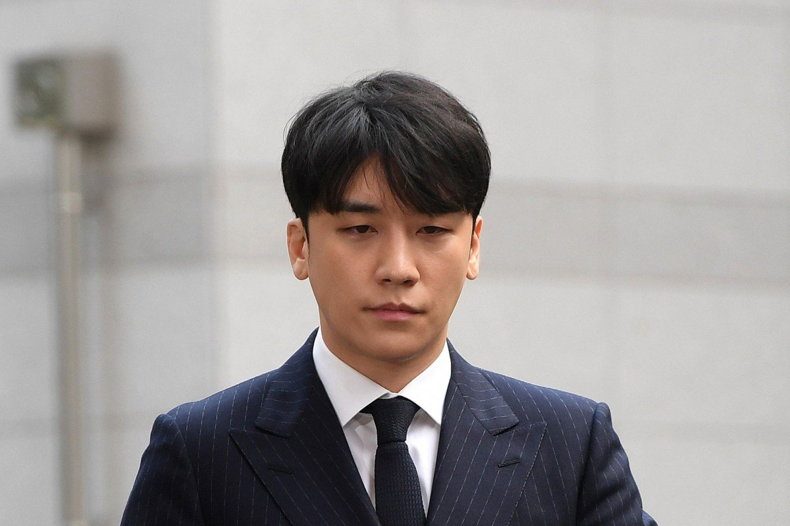

A scandal related in entertainment and sex in one of the biggest night clubs in Seoul. Seungri of Big Bang, his club Burning Sun and it’s employees, as well as a number of celebrities are being investigated for a number of cases from prostitution, sex tapes, tax evasion, drug use and distribution, rape, and more. This is begins on November 24 2018 when a man named Kim Sang Kyo was reportedly assaulted at the Burning Sun after he stepped in to help a woman who was being sexually harassed. Several security guards at the club dragging him out, then club director, Mr.Jang grabs continues to beat him. Police were called to the scene and Kim Sang Kyo was arrested. According to the CCTV footage, police was being harsh to Kim.
January 29, 2019, Burning Sun released a statement following the news of the assault. The management accused Mr. Kim of attempting to harass women. They also denied that Seungri had been at the club at the time of the incident. The Seoul Metropolitan Police Department released a statement saying that they will investigate the matter. Two days later, YG Entertainment CEO, Yang Hyun Suk said, “our artists’ operations of their personal businesses are completely unrelated to YG.” He also claimed that Seungri only resigned as director of the club due to his upcoming military enlistment. On February 2, Seungri posted a letter of apology on Instagram for the Burning Sun controversies. He claimed to have a low level of involvement with the club’s management. As he tells it, he initially joined the club as a DJ, then was promoted to publicity director.
On February 4, Burning Sun CEO Lee Moon Ho officially apologized to Seungri and revealed that he fired the club’s director, Jang, who assaulted Mr. Kim. It was also announced that Burning Sun would be shuttered. On February 13, Reports claimed that a woman nicknamed “Anna” was suspected of dealing drugs at Burning Sun. Her selfie with Seungri began to circulate online, prompting the singer to claim he thought he was posing for a photo with a fan.
On February 26, Korean outlet SBS funE reported on a KakaoTalk group chat from December 2015 where Seungri allegedly planned to bribe investors with prostitutes. The chat reportedly included Singer C, later revealed to be FTISLAND’s Choi Jonghoon, Yuri Holdings CEO Yoo In Suk and an anonymous Burning Sun employee.
Seungri reportedly directed the employee to find prostitutes. The Seoul Police Department launched an investigation into the prostitution claims. Yuri Holdings denied claims they sought prostitutes to bribe investors. YG Entertainment released a statement that the messages were fabricated. The next day, Seungri arrived at police station for questioning. 24 hours later, News outlet Chosun.com reported that trucks from a document-shredding service arrived at YG Entertainment. A YG employee claimed that the shredding process was merely a quarterly routine, and YG founder Yang Hyun Suk later refuted Chosun.com’s report on Instagram. The whistleblower discovered the chat bypassed the police. The chat suggested that the members of Burning Sun had strong ties to police force. Which then the messages sent to the Anti-Corruption and Civil Rights Commission.
On March 4, The Seoul Metropolitan Police Agency said they haven't received records of Burning Sun chat in the first place. Then Kukinews reported that Yang Hyun Suk and his brother, Yang Min Suk, both YG CEO, owned a club called Love Signal, reportedly under suspicion of tax evasion. On March 10, Seungri was booked on charges of supplying prostitutes, and he became a suspect in the case. Three to four more members of the chat were booked. Jung Joon-young was booked on charges of illegal hidden camera filming. He was removed from the casts of several TV shows, including 2 Days & 1 Night, Salty Tour and 4 Wheeled Restaurant. Yong Junhyung announced his departure from Highlight. He was not part of the main chatroom, but he had knowledge of Jung’s illegal camera footage. FNC Entertainment announced that Choi Jonghoon left FTISLAND and retired from the entertainment industry. 8 O’Clock News reported on a lewd one-on-one chat between Jung Joon-young and CNBLUE’s Lee Jong Hyun. Lee was not part of the main chatroom. Yoo In Suk resigned as CEO of Yuri Holdings in March 15. Former FTISLAND member Choi Jonghoon was booked on charges of sharing illegal photos. Superintendent “Yoon,” who is suspected of police corruption, admitted that he was acquainted with Yuri Holdings’ Yoo In Suk, one of the members of the chatroom. The superintendent was later booked by the police. SBS’s 8 O’Clock News revealed their older phone interview with Choi Jonghoon, in which the former FTISLAND member talked about his ties to Superintendent Yoon, who is suspected of covering up criminal activity.
MBC’s Newsdesk reported that a minor entered Burning Sun in July 2018, and that Burning Sun CEO Lee Sung Hyun paid an officer named Kang to cover up the situation. Additionally, Seungri was accused of knowing about the incident. The court announced that Jung Joon-young's arrest. It was revealed that he stands accused of destruction of evidence for resetting one of his three phones, among other charges. He admitted to all charges earlier in the day, and he could receive a sentence of up to seven years and six months. Choi Jonghoon was booked for bribing an officer. FNC Entertainment terminated his contract. Yang Min Suk retained his position as CEO of YG Entertainment after facing a no-confidence vote among shareholders. YG’s market value fell 25.47 percent between Feb. 25 and March 21.
Seungri retired from BIGBANG following his booking by Seoul police and charges pertaining to prostitution. The scandal has already implicated singer Jung Joon-young and FTISLAND’s Choi Jonghoon. To a lesser degree, CNBLUE’s Lee Jong Hyun and Highlight’s Yong Junhyung have also been tied to the controversy. A bulk of the evidence stems from leaked chatrooms from Korean app KakaoTalk. A technician reportedly discovered multiple chats on Jung Joon-young’s phone after the singer sent it in for repairs. But the scandal revolves around a core chat that involved eight members: Seungri, Jung, Choi Jonghoon, Yoo In Suk, Burning Sun employee named Mr. Kim, a relative of a girl group member, a former YG Entertainment employee and a friend of Jung.
These developments have become national news on such a large scale that even South Korean President Moon Jae-in commented on them, stating that "If the truth is not revealed, we cannot say it's a just society." The crimes echo larger issues facing Korea, such as the country’s ongoing spy cam epidemic. South Korean President Moon Jae-in ordered a thorough probe of three cases focused on Burning Sun, late actress Jang Jayeon and former Vice Minister of Ministry of Justice Kim Hak Eui. The investigation into Jang Jayeon’s sexual abuse case was extended for another two months. The actress died by suicide in 2009, leaving behind a note condemning at least 30 figures tied to the entertainment industry. A Blue House petition seeking to extend the investigation reached 687,767 signatures. Although Jang’s case is not directly related to Burning Sun, the latter prompted increased calls to reinvestigate sexual abuse cases.